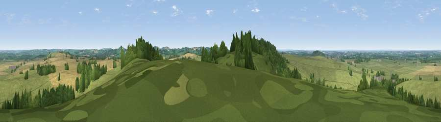

Viewpoint near Lower Shuckburgh
#12792 in England · top 10% of its area beats it · near Lower Shuckburgh · path 262 mWhere it is
The exact computed spot (SP 49675 62025). Click the marker for map links.
Public access: the nearest public right of way is about 262 m away — the final stretch may cross private land. Computed from Natural England's CRoW access layer and OpenStreetMap rights of way — not the legal definitive map. Always verify locally.
The view, rendered

A 360° render of this exact spot computed from the terrain model, tree cover and land cover — summer colours, afternoon light, calibrated against photographs of famous viewpoints. Real trees, hedges and buildings will differ in detail.
The panorama
Grey silhouette: terrain skyline in each direction (720 bearings, Earth curvature and refraction included). Dashed green: skyline with trees (+15 m) and buildings (+8 m) as obstacles. Blue strip: how far the ground is visible on each bearing.
Where the view opens
Wedge length = distance to the farthest visible ground on that bearing (vegetation-aware). Rings at 10, 25 and 50 km.
What fills the view
60% grassland · 20% woodland · 20% cropland ·
Angular shares of the visible panorama (visual magnitude), not map area. Landscape diversity 0.43 (0–1 Shannon).
Key numbers
More beautiful places nearby
The staircase of upgrades: each row has a higher view potential than everything closer. Driving times are estimates from straight-line distance, calibrated against real road routing — check an actual route before setting out.
| Place | Direction | Drive | Score |
|---|---|---|---|
| Viewpoint near Lower Shuckburgh | SSW · 1 km | ~2 min | 61.6 |
| Big Hill - Staverton Clump | E · 5 km | ~12 min | 68.4 |
| Viewpoint near Northend | SW · 14 km | ~26 min | 69.7 |
| Viewpoint near Northend | SW · 14 km | ~26 min | 70.3 |
| Viewpoint near Radway | SW · 18 km | ~31 min | 71.7 |
| Viewpoint near Ilmington | WSW · 35 km | ~53 min | 72.6 |
| Viewpoint near Meon Vale | WSW · 36 km | ~55 min | 77.0 |
| Broadway Hill | SW · 46 km | ~67 min | 77.7 |
52.25416, -1.27372 · source: screening · position refined by local search. Computed location — check access rights before visiting.